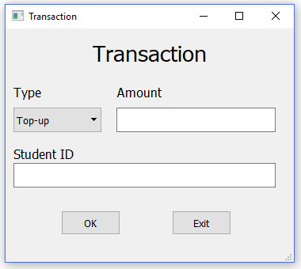
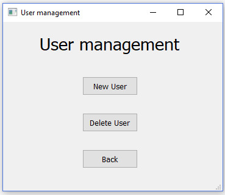
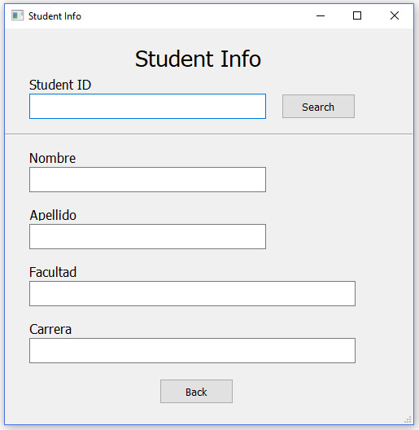
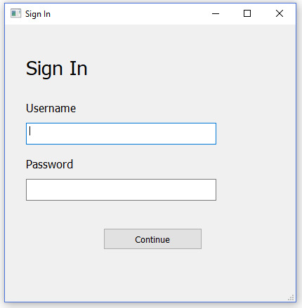

Special Topics II Project - Python¶

Getting Started¶
Institution Internal Transaction System - utpWallet (*Tentative Name) Developed in Python 3 from Anaconda for Backend, MySQL Community + MySQL WorkBench for Database, PyQt for Graphical User Interface.
Built With / Softwares used¶
- Anaconda - Python3 - Backend
- PyQt from Anaconda - Python GUI Module
- Qt Designer - Qt tool for GUI design and built
- MySQL Community - DBMS & Local Server Setup
- MySQL Workbench - SQL Development, Data Modeling, EER Diagram
Authors¶
- Luis Yao - Fullstack Developer
- Roderick Mastrolinardo - Fullstack Developer
- Ivan Martinez - Fullstack Developer/Sphinx
- Luis Cardoze - Documentation
- Eric Gonzales - Documentation
Screenshoots¶
   Acknowledgments¶
- PhD Javier Sanchez Gavilan -Professor-
- Omar Mejia -Student-